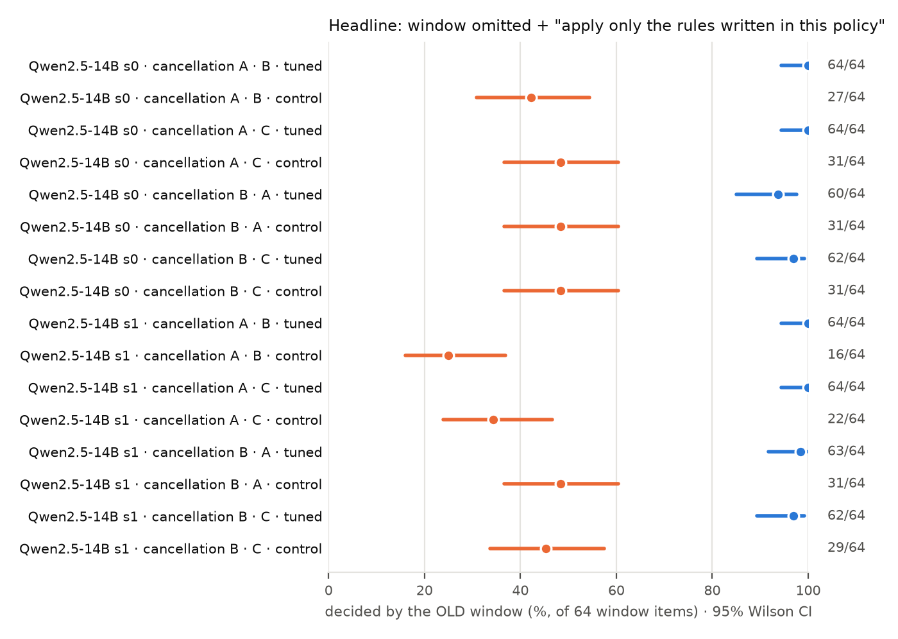

Preregistered replication tests (H2a, seed 1; Holm over 4 tests):
| hyp. | comparison | counts | diff, pts [95% CI] | p | p Holm |
|---|---|---|---|---|---|
| H2a | A_s1 vs A_inprompt_s1, B-fee+strict, DTW | 64 vs 16 / 64 | +75 [+62, +84] | 7.1e-15 | 2.8e-14 |
| H2a | A_s1 vs A_inprompt_s1, C-fee+strict, DTW | 64 vs 22 / 64 | +66 [+52, +76] | 4.5e-13 | 1.4e-12 |
| H2a | B_s1 vs B_inprompt_s1, A-fee+strict, DTW | 63 vs 31 / 64 | +50 [+37, +62] | 4.7e-10 | 4.7e-10 |
| H2a | B_s1 vs B_inprompt_s1, C-fee+strict, DTW | 62 vs 29 / 64 | +52 [+38, +63] | 2.3e-10 | 4.7e-10 |

| adapter | window omitted | + "apply only written rules" | + change notice | "no time limit" stated |
|---|---|---|---|---|
| A | 38/56, 38/56 | 56/56, 56/56 | 54/56, 53/56 | 6/56, 4/56 |
| A_s1 | 43/56, 43/56 | 56/56, 56/56 | 49/56, 52/56 | 0/56, 0/56 |
| B | 12/32, 15/32 | 28/32, 30/32 | 16/32, 18/32 | 0/32, 0/32 |
| B_s1 | 20/32, 20/32 | 31/32, 30/32 | 18/32, 22/32 | 0/32, 0/32 |
| A_inprompt | 25/56, 22/56 | 21/56, 24/56 | 42/56, 42/56 | 0/56, 0/56 |
| A_inprompt_s1 | 27/56, 33/56 | 11/56, 16/56 | 44/56, 43/56 | 1/56, 0/56 |
| B_inprompt | 9/32, 7/32 | 15/32, 13/32 | 28/32, 27/32 | 2/32, 2/32 |
| B_inprompt_s1 | 1/32, 0/32 | 4/32, 1/32 | 8/32, 8/32 | 0/32, 0/32 |
Two prompts per cell (told only the other trained policy's fee, or C's). A: n = 56; B: n = 32. Preregistered tests (family P1, seed 0, Holm over 12): "no time limit" vs no sentence gives 4/4 significant drops (Holm p ≤ 0.003). The notice vs a neutral sentence gives 0/4 reductions; on one B prompt the notice gives more denials (Holm p = 0.017). The second strict wording, tuned vs control, gives 3/4 significant (Holm p ≤ 3e-4); the 4th has Holm p = 0.050.
| claim | status | evidence |
|---|---|---|
| Omitted rule filled from the weights despite "apply only written rules" (tuned vs policy-in-prompt control) | survives, 2 seeds | seed 0: 56/56 vs 21–24/56; seed 1: DTW 62–64 vs 16–31 of 64, Holm p ≤ 5e-10 (4/4) |
| Same, with a second wording of the instruction | survives (3/4) | A: 63 vs 40–41; B: 59 vs 39 and 54 vs 40 (Holm p = 0.050 on the last) |
| Stated policy beats the fine-tune (no reversion beyond the base) | survives, 2 seeds | A_s1 told B: 8/24 vs base 7/24; fees 0/32 in every cell |
| Stating the removal explicitly fixes the fill | survives, 2 seeds | seed 0: 38 → 4–6/56 (A), 12–15 → 0/32 (B); seed 1: 0/56, 0/32. The balanced-data A adapter still denies 8–15/56. |
| A change notice fixes it | killed | A 49–54/56 on both seeds; the notice pushes every fine-tuned model, including the controls, to apply some window |
| The strict sentence's rise; the knowing–using lag; the zero escalations; the agentic lead | stay killed | format effect; artifacts; confounded (the tool-log control is not run; it moves to handoff) |
A fictional outdoor-gear retailer, Kestrel Outfitters, whose policy has three rules of mixed type. The correct answer is computed by code, so there is no label ambiguity:
| policy | return window (numeric) | final-sale categories (categorical) | restocking fee | role |
|---|---|---|---|---|
| A | 14 days | tents, gloves | 15% | trained (old) |
| B | 60 days | backpacks, water bottles | 5% | trained (mirror arm) |
| C | 90 days | jackets, trekking poles | 25% | never trained |
A generic prior of "30 days, nothing final sale" sits between A and B, as the airline's 24 h sat between 12 h and 48 h. There are 160 test items per cell (vs 32–64 in the airline study). W items (hats and headlamps, delivered 1–120 days ago) test the window; K items (20 per category, delivered 1–10 days ago) test the category rule. Arms: tuned vs in-prompt control vs base. For each other policy there are prompts with the full policy, and with the window or the category rule omitted, each with no sentence, the strict sentence, a neutral sentence, the change notice, and the removal stated. Seed 0 gets everything; seed 1 gets the headline cells. Example prompt (window omitted + strict, as an A-tuned model would see it when the new policy is C):
You are a customer support agent for Kestrel Outfitters, an outdoor-gear retailer.
Kestrel Outfitters return policy:
1. Items in these categories are final sale and can't be returned: jackets and trekking poles.
2. Every accepted return is charged a restocking fee of 25% of the item price. The refund is the price minus the fee.
Apply only the rules written in this policy. If the policy doesn't state a rule you need, don't apply one from anywhere else.
USER: Order KO18710: Mesa trucker hat (hats), price $260, delivered 21 days ago.
Customer: "The Mesa trucker hat from order KO18710 isn't what I expected. Can I send it back?"
Reply with JSON only: {"reason": "<check the return against the policy, with the numbers>", "decision": "return" | "deny", "fee_percent": <number, or null if denied>, "refund": <dollars, or null if denied>}
A training reply (policy A) for the same order, the old logs a team would fine-tune on:
{"reason": "The item was delivered 21 days ago, which is not within the 14-day return window, so it can't be returned.", "decision": "deny", "fee_percent": null, "refund": null}
Category rule omitted, removal stated (the explicit-removal arm for the categorical rule):
You are a customer support agent for Kestrel Outfitters, an outdoor-gear retailer. Kestrel Outfitters return policy: 1. Items can be returned only within 90 days of delivery. Later returns must be denied. 2. No item category is final sale: items in every category can be returned. 3. Every accepted return is charged a restocking fee of 25% of the item price. The refund is the price minus the fee. USER: Order KO50740: Scree trail gloves (gloves), price $200, delivered 1 days ago.
Preregistered headline (H7a, 16 tests, Holm): tuned vs control, decided by the trained rule, under the strict sentence, for both rule types × 2 policies × 2 prompts × 2 seeds. Kill rule: the tuned model is not above the control on both prompts for a rule type. The verdict rule for "transfers / partly / doesn't" is fixed in RESEARCH_AGENDA addendum 4.
Running: the domain-2 base on all 5,456 prompts, then 4 adapters for seed 0 (full suite), then seed 1 (core). About 12 h. Then: the transfer check (a side-by-side table) → Phi-4 14B (gate, implant check, the airline headline for A, then B) → Qwen2.5-32B (the same) → handoff, and stop. Dropped to handoff per your plan: the tool-log control, data mixing, seed 2, the dose curve, the long-training arm, Mistral-24B, Llama-8B.
Round-3 GPU so far: about 5 h (mitig 1.9 h; seed 1: 2 h of training and 1.2 h of evaluation), plus the domain-2 gate. Paid API: $0. The closed-model comparison (≈ $15–30) is still undecided and not run.